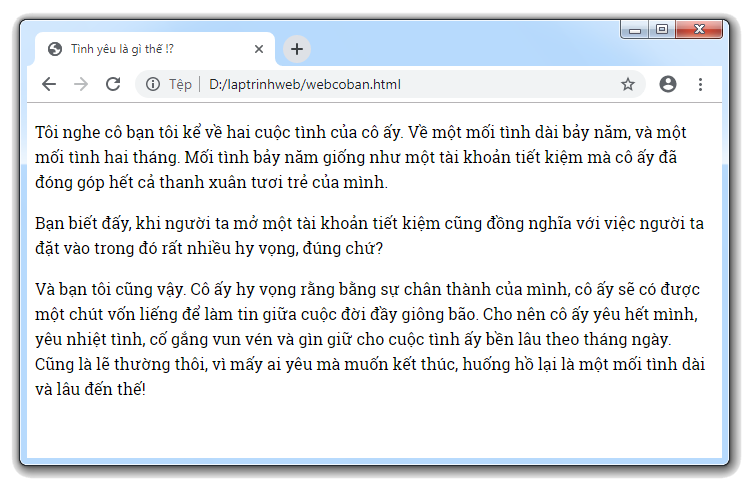
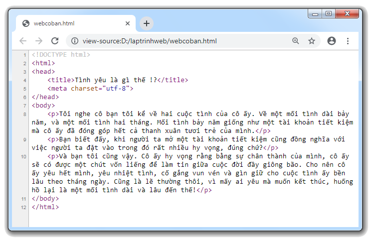

Các vấn đề liên quan đến đoạn văn bản trong HTML
1) Cách tạo một đoạn văn bản
- Trong HTML, văn bản thường được thể hiện dưới dạng từng đoạn. Mỗi đoạn văn bản sẽ có một khoảng cách lề phía trên & lề phía dưới (mặc định là 16 pixel) để tách biệt đoạn văn bản với các nội dung nằm ở phía trên và phía dưới nó.
- Ví dụ: Trang web bên dưới có ba đoạn văn bản, nhìn kỹ thì các bạn sẽ thấy ba đoạn văn bản này được tách biệt rất rõ ràng, đó chính là nhờ vào khoảng cách lề 16 pixel nằm giữa chúng.

- Để tạo được một đoạn văn bản thì chúng ta cần phải sử dụng thẻ <p>
(dưới đây là đoạn mã dùng để tạo trang web giống như hình minh họa phía trên)

2) Vấn đề khoảng trắng
- Khi chúng ta soạn thảo một đoạn văn bản, nằm giữa mỗi hai ký tự chỉ được phép tồn tại tối đa một dấu khoảng trắng, nếu chúng ta sử dụng phím Space để nhập nhiều dấu khoảng trắng liên tiếp thì khi hiển thị lên màn hình, trình duyệt sẽ loại bỏ những dấu khoảng trắng dư thừa.
<!DOCTYPE html>
<html>
<head>
<title>Xem ví dụ</title>
<meta charset="utf-8">
</head>
<body>
<p>Tài liệu hướng dẫn học lập trình web</p>
</body>
</html>
- Để khắc phục việc muốn hiển thị nhiều dấu khoảng trắng nằm giữa hai ký tự thì chúng ta phải thay thế phím Space bằng chuỗi ký tự (một chuỗi ký tự sẽ tương ứng với một khoảng trắng)
- Nằm giữa chữ Lập & chữ Trình có 3 dấu khoảng trắng.
- Nằm giữa chữ Trình & chữ Web có 5 dấu khoảng trắng.
<!DOCTYPE html>
<html>
<head>
<title>Xem ví dụ</title>
<meta charset="utf-8">
</head>
<body>
<p>Lập Trình Web</p>
</body>
</html>
3) Vấn đề ngắt xuống dòng
- Trong ngôn ngữ HTML, chúng ta không thể sử dụng phím Enter với mục đích hiển thị dấu ngắt xuống dòng, nếu các bạn dùng phím Enter để nhập dấu ngắt xuống dòng thì khi hiển thị lên màn hình, trình duyệt cũng chỉ xem nó như một dấu khoảng trắng.
<!DOCTYPE html>
<html>
<head>
<title>Xem ví dụ</title>
<meta charset="utf-8">
</head>
<body>
<p>Tài
liệu
hướng
dẫn
học lập trình web</p>
</body>
</html>
- Để hiển thị dấu ngắt xuống dòng thì chúng ta phải sử dụng thẻ <br>
- Lưu ý: Mỗi một thẻ <br> sẽ tương ứng với một dấu ngắt xuống dòng.
<!DOCTYPE html>
<html>
<head>
<title>Xem ví dụ</title>
<meta charset="utf-8">
</head>
<body>
<p>Tài<br>liệu<br><br><br>hướng<br><br>dẫn<br><br>học lập trình web</p>
</body>
</html>
4) Canh lề cho đoạn văn bản
- Tương tự như trong Microsoft Word. Trong HTML, chúng ta cũng có thể canh lề cho một đoạn văn bản.
|
Canh văn bản nằm bên trái Canh văn bản nằm giữa Canh văn bản nằm bên phải Canh đều hai bên trái phải |
- Để canh lề cho một đoạn văn bản thì chúng ta thêm thuộc tính align vào bên trong thẻ <p>.
- Cú pháp:
- Trong đó, value có thể được xác định dựa theo một trong bốn loại giá trị:
| left | - Văn bản được canh nằm bên trái |
Xem ví dụ |
| center | - Văn bản được canh nằm giữa |
|
| right | - Văn bản được canh nằm bên phải |
|
| justify | - Văn bản được canh đều hai bên trái phải |
- Lưu ý: Mặc định thì văn bản được canh nằm phía bên trái. Cho nên việc canh lề cho văn bản nằm phía bên trái là điều không cần thiết.